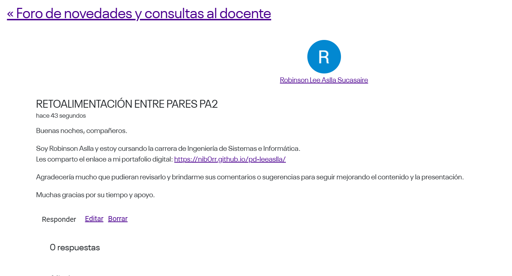

Referencias (APA 7.ª edición)
Bandura, A. (1997). Self-efficacy: The exercise of control. W. H. Freeman.
Fernando, J. (31 de agosto de 2020). Repositorios de Recursos Educativos Digitales [Video]. YouTube. https://www.youtube.com/watch?v=v54XHqP-WAU
Inteligencia Artificial para Docentes. (22 de junio de 2023). Aplicaciones de la Inteligencia Artificial en la educación [Video]. YouTube. https://www.youtube.com/watch?v=sST9w9qqenk
Kotter, J. P. (1996). Leading change. Harvard Business School Press.
Miao, F., y Holmes, W. (2023). Guidance for generative AI in education and research. UNESCO. https://unesdoc.unesco.org/ark:/48223/pf0000386693
Muñoz Garro, E. (2024). La influencia de la tecnología en el liderazgo global: amplificando habilidades y capacidades en un entorno empresarial digitalizado. e-Ciencias de la Información, 14(2). https://doi.org/10.15517/eci.v14i2.55613
Schwaber, K., y Sutherland, J. (2020). The Scrum Guide. https://scrumguides.org/docs/scrumguide/v2020/2020-Scrum-Guide-US.pdf
Tecnotutoriales. (24 de noviembre de 2022). Cómo crear una página web en Wix en español (2024) Tutorial paso a paso [Video]. YouTube. https://www.youtube.com/watch?v=oCAqQQIx4mQ
Virgolini, D. (22 de mayo de 2025). Gestión del Cambio | 8 Pasos de Kotter [Video]. YouTube. https://www.youtube.com/watch?v=gbOn4Aw0yH4
Licencias y derechos de autor
Respeto los derechos de autor: cito las fuentes, parafraseo las ideas con mis palabras y no reproduzco textos ni imágenes ajenas. Los videos se muestran con el reproductor oficial de YouTube y no se descargaron ni se copiaron.
| Recurso | Licencia o condición | Cómo lo uso |
|---|---|---|
| The Scrum Guide (2020) | CC BY-SA 4.0 | Parafraseo conceptos con atribución. Si adaptara el texto, lo compartiría con la misma licencia. |
| Guía de la UNESCO sobre IA generativa (2023) | CC BY-SA 3.0 IGO | Parafraseo ideas con atribución. |
| Artículo de Muñoz Garro (2024) | Publicado en revista de acceso abierto; se aplican las condiciones indicadas por la revista | Solo cito y parafraseo, sin reproducir fragmentos extensos. |
| Libros de Bandura (1997) y Kotter (1996) | Derechos reservados | Solo cita bibliográfica de sus ideas. |
| Videos de YouTube | Términos de servicio de YouTube y derechos de sus autores | Incrustados con el reproductor oficial, con referencia completa. |
| Infografías (figuras 1 y 2) | Elaboración propia con apoyo de IA; CC BY-NC-SA 4.0 | Creadas por mí a partir de mis indicaciones. |
| Textos y estructura de este portafolio | CC BY-NC-SA 4.0 | Pueden compartirse citando al autor, sin uso comercial y con la misma licencia. |
Publicación y difusión
La consigna pide crear la página en una plataforma gratuita. Los recursos de la unidad incluyen un tutorial para hacerlo en Wix; yo elegí GitHub Pages, que también es gratuita y me permite controlar el código con HTML, CSS y JavaScript básico.
Dirección del sitio: https://nib0rr.github.io/pd-leeaslla/
El sitio es de acceso público, por lo que el docente puede visualizarlo, revisarlo y calificarlo sin solicitar permisos.

Retroalimentación recibida
Compartí este portafolio con mis compañeros y mi docente para recibir comentarios y mejorar el trabajo.
| Persona | Medio | Comentario recibido | Mejora realizada |
|---|---|---|---|
| PENDIENTE | PENDIENTE | PENDIENTE | PENDIENTE |
| PENDIENTE | PENDIENTE | PENDIENTE | PENDIENTE |